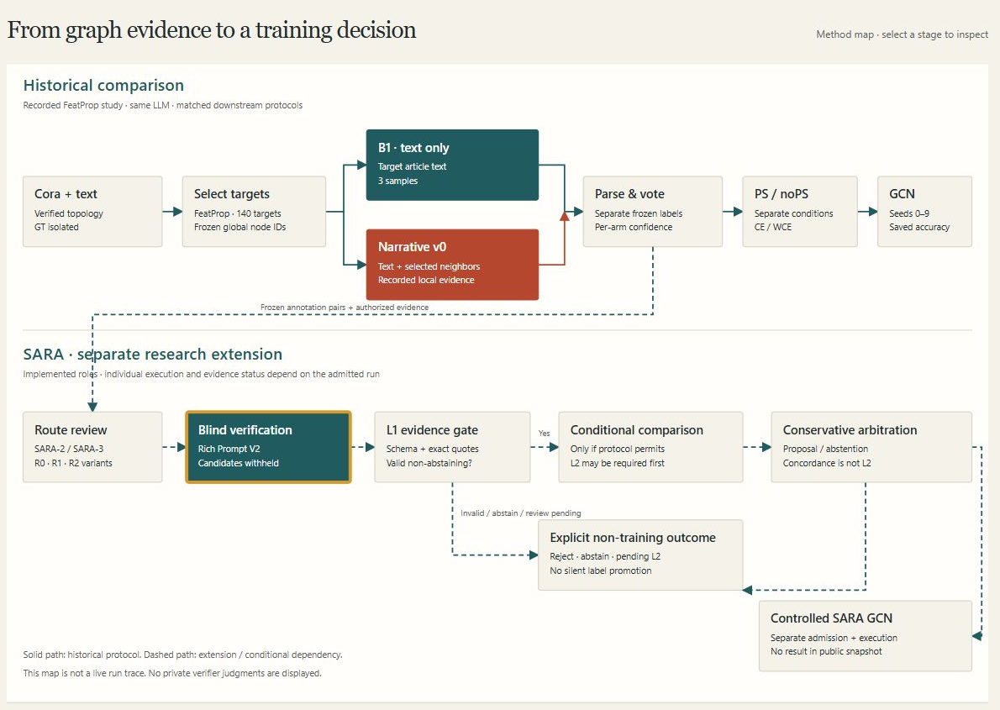

Structure-Aware LLM-Based Graph Node Labeling
GraphScope is an interactive research atlas for my structure-aware graph labeling work. It connects the recorded Cora topology, B1/Narrative v0 annotations, and matched historical GCN outcomes while keeping SARA extensions and prospective evaluation separate.
How I built it
- Research context
- Undergraduate thesis at Amirkabir University of Technology, supervised by Dr. Mostafa Haghir Chehreghani; inspired by published label-free methods.
- Current investigation
- Structure-aware prompts, annotation efficiency, and reliable evaluation. Failed or conflicting labels and confidence limitations are an ongoing related investigation; an inspection interface is in progress.
- Status
- Ongoing research, 2026–present. The original GraphScope workflow separates historical observations from SARA methods; no new SARA GCN improvement is claimed.